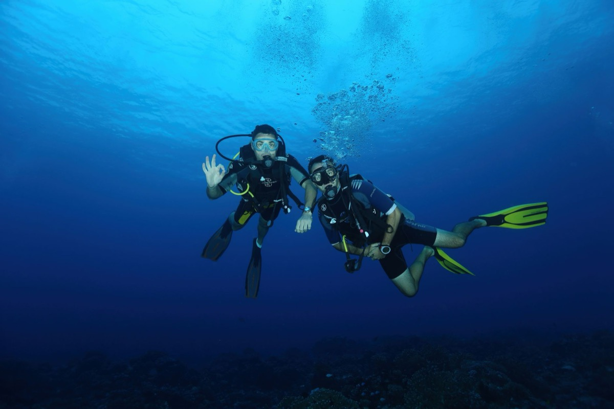
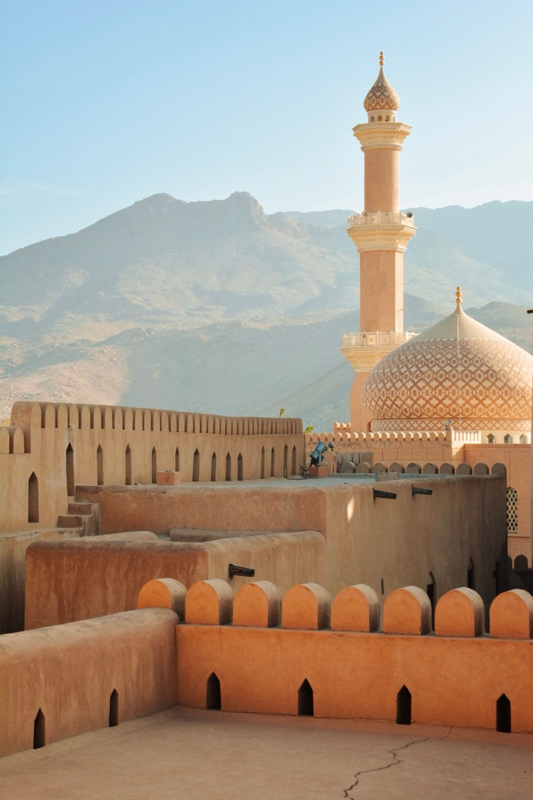

Le meilleur de la nature d'Oman
Des hôtels sélectionnés, de vraies aventures et une équipe sur place qui connaît Oman sur le bout des doigts.
Oman, conçu autour de vous
Wadi Escape crée des voyages sur mesure à travers Oman, des rivières de canyon aux nuits dans le désert, jusqu'à la plongée de classe mondiale. Chaque itinéraire est construit autour de vous, avec une équipe locale qui vit et respire ce pays.
Trouvez votre itinéraire
Quatre voyages prêts à partir, tous entièrement ajustables à votre rythme et à votre budget, ou partez d'une page blanche.

Muscat Escape
Une introduction idéale à la capitale d'Oman, à sa culture et à son littoral.
Voir l'itinéraire complet →
Oman Coast Explorer
Troquez la ville contre la côte : falaises, gouffres marins et eaux peuplées de dauphins.
Voir l'itinéraire complet →
Desert & Mountains Adventure
Du patrimoine des montagnes à une nuit sous les étoiles du désert.
Voir l'itinéraire complet →
Ultimate Oman Experience
Le voyage complet : côte, montagnes, désert et tout ce qu'il y a entre les deux.
Voir l'itinéraire complet →Ce que vous allez vivre

Mer & littoral
Croisières avec dauphins, snorkeling, wakeboard, kayak et escapades sur la plage.

Montagnes & wadis
Bassins de canyon, sentiers de montagne et une nuit à Jabal Akhdar.

Désert
Le désert du Wahiba et Barr Al Hikman, en excursion d'une journée ou sous les étoiles.

Culture
Les forts, souks et monuments de Nizwa, de Sour et de Mascate.
Pas un tour-opérateur comme les autres
Local, jamais sous-traité
Notre équipe vit à Oman toute l'année : pas de centre d'appels qui lit un script.
Construit autour de vous
Chaque voyage est adapté à votre rythme, à votre budget et à vos envies.
Au-delà du guide touristique
Nous vous emmenons là où la plupart des groupes ne vont jamais.
Ils en parlent mieux que nous
« Le Wadi Shab à lui seul valait le voyage, puis toute la côte s'est déroulée à partir de là. Chaque hôtel, chaque chauffeur, chaque étape semblait choisi pour nous, pas copié-collé d'une brochure. »
Sarah & JamesLondres, Royaume-Uni · Oman Coast Explorer« Je voyage souvent seul et je finis d'habitude noyé dans des circuits de groupe génériques. Là, c'était différent : de vraies pistes en 4x4, une nuit dans le désert du Wahiba que je n'oublierai pas, et un guide qui avait vraiment envie d'être là. »
Marco T.Milan, Italie · Desert & Mountains Adventure« Avec deux jeunes enfants, nous avions surtout besoin de souplesse. Ils ont refait la moitié de l'itinéraire autour des siestes et nous avons quand même vu des dauphins, des forts et un coucher de soleil dont on parle encore. »
La famille ChenSingapour · Muscat EscapePrêt à découvrir Oman autrement ?
Dites-nous ce que vous avez en tête et nous construirons le voyage autour.
Demandez votre devis gratuit →